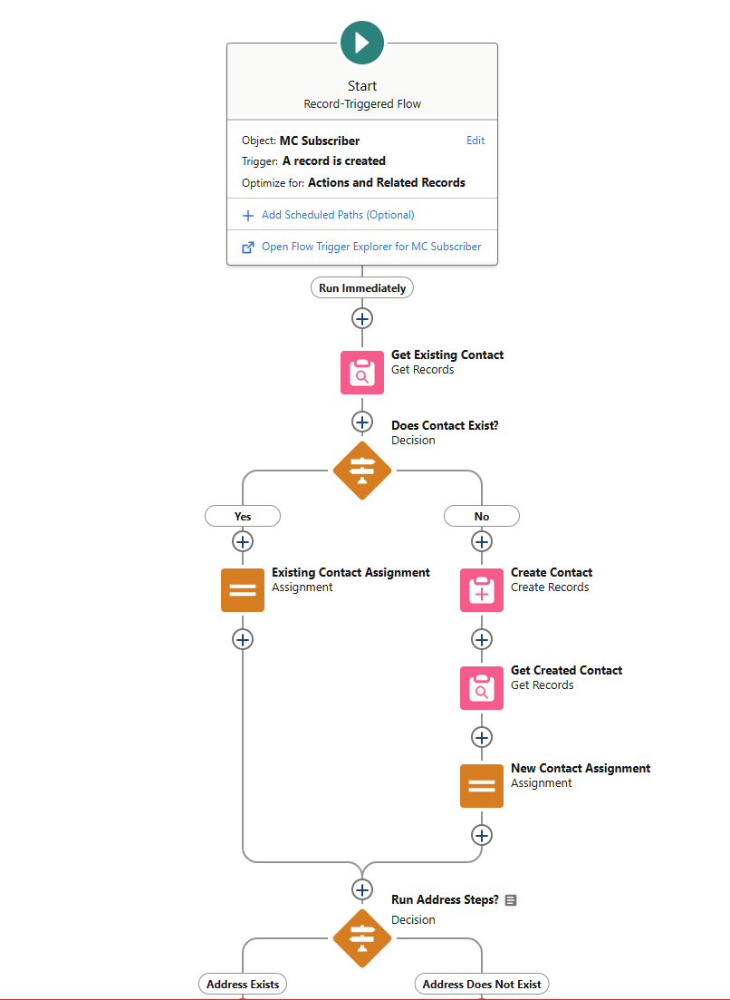

In fall of 2024, I performed Salesforce work for the Yampa Valley Sustainability Council non-profit organization utilizing the Non Profit Success Pack. We met weekly to demo my changes and get approval before deploying them; utilizing best practices, all of my changes were performed in a sandbox and then pushed to production using change sets.
I was supervised in this project by my older brother, who has seven years of Salesforce experience.

The bulk of project was setting up an integration between Salesforce and Mailchimp to connect donors and event attendees with their correspondence, saving hour-long processes manually synching contact data. This included installing and configuring the Mailchimp for Salesforce Package with further add-ons such as a Flow to ensure the data is mapped completely and in line with how YVSC is using their Salesforce instance.
Additionally, I fixed several bugs with the setup and wrote Apex classes utilizing Batchable Apex to clean hundreds of records in the org's data and help prevent duplicates.